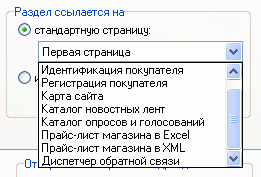
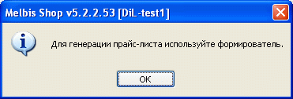
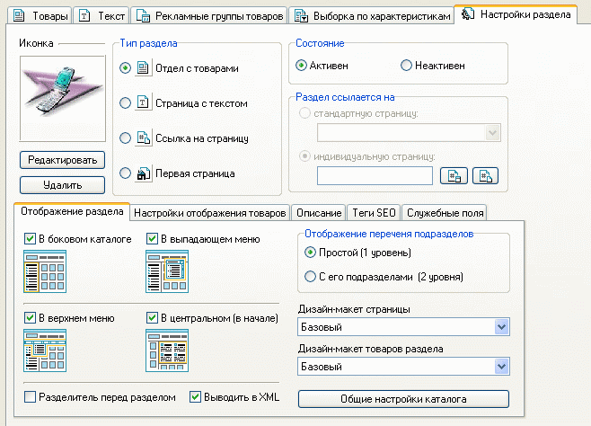
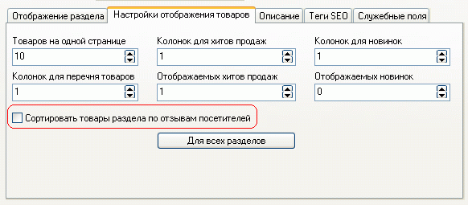
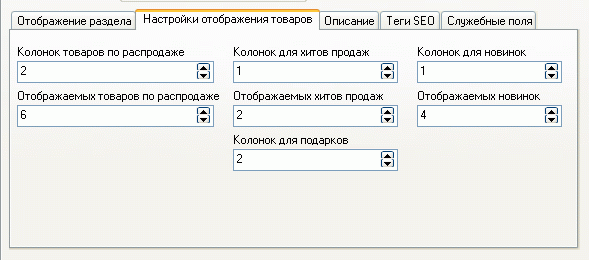
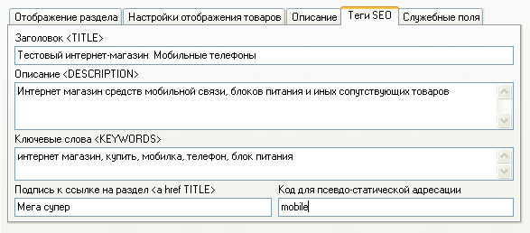
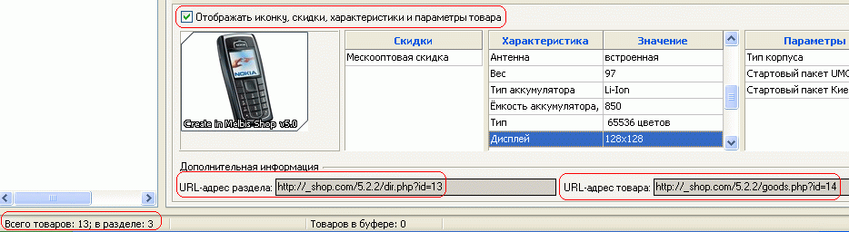

Разделы, в зависимости от своего типа, имеют различные свойства, задаваемые в правой части главного окна программы Melbis Shop.
Обязательной для разделов всех типов является закладка "Настройки раздела". На указанной закладке, помимо выбора типа раздела, возможно:

При этом следует учесть, что при выборе ссылки на стандартную страницу типа "Прайс-лист магазина в Excel", указанный прайс-лист предварительно необходимо создать ("Утилиты - Прайс лист в Excel - Формирователь прайс-листа в Excel") и отправить на сервер ("Магазин - Отправка данных"), о чем выдается соответствующее напоминание:

Помимо того, в закладке "Отображение раздела" возможна дополнительная настройка для каждого раздела: задание мест отображения ссылки на раздел; при необходимости логической группировки - установка разделителя перед разделом; указание способа отображения подразделов- "простой" / "с его подразделами" (применимо для разделов, имеющих подразделы), выбор дизайн-макета страницы и товаров раздела:

Также для всех разделов типа "Отдел с товарами" и "Страница с текстом" можно указать следующие настройки отображения товаров, применив их при желании ко всем разделам данных типов:

Если при этом опция "Сортировать товары раздела по отзывам посетителей" не выбрана - товары отображаются в заданном порядке, а если выбрана - отображаются на основе оценок, выставленных покупателями (см."Отзывы и голосования по товарам").
Для "Первой страницы" эти настройки будут несколько иными:

Для всех типов разделов можно задать "Описание", содержащее краткие сведения о разделе для посетителей. Оно будет выводиться в перечне подразделов в центральном каталоге.
Для всех типов разделов, кроме типа "Ссылка на страницу", можно задать теги:

- Заголовок “TITLE” - название (заголовок) HTML-документа. Оно должно быть ёмким, лаконичным и давать общее представление о содержании страницы. Это один из наиболее важных тэгов, в которые включают и ключевые слова. Поскольку заголовок располагается в начале кода документа, то это одна из первых вещей, которую увидит поисковик. При этом заголовок не виден на самой веб странице, но отображается в заголовке окна браузера, а также в случае, когда кто-то делает закладку на ваш сайт. Рекомендуемый объем 60-80 символов.
- Описание “DESCRIPTION” - При просмотре поисковых результатов, предоставленных поисковой системой, описание - это то, что пользователь может увидеть наряду с заглавием . Поэтому описание, как и заглавие страницы, должно привлекать пользователя. На него всегда обращает своё внимание и поисковик. Описание должно быть емким и кратким, так как его объем очень ограничен и не должен превышать 200 символов.
Кроме того, поисковые системы иногда используют описание страницы для определения
релевантности сайта пользовательскому запросу. Не надо указывать в описании
страницы ее заглавие, так как оно все равно будет проиндексировано и показано.
- Ключевые слова “KEYWORDS” – Следует определить, какие ключевые слова и/или фразы будут использоваться пользователями на поисковике, чтобы найти Ваш сайт вообще и расположенный на данной странице товар в частности. Затем все это следует превратить в несколько ключевых слов или фраз. Количество ключевых слов, как правило, должно составлять 5% от всего объема документа. Робот также оценивает удаленность ключевых слов от начала документа и их кучность.
- Подпись к ссылке на товар “a href TITLE”. Ссылки
позволяют посетителю переходить на другую страницу Вашего сайта или какого-нибудь
другого. Поисковики обращают внимание на них в поисках ключевых слов. Некоторые
поисковые системы оценивают сайты, основываясь на популярности ссылок.
- Код для псевдо-статической адресации - В народе именуются как ЧПУ (человеко-понятный урл). В случае, если это поле не задано, то обращение к разделу будет следующего вида: http://www.shop.com/dir.php?id=5, где 5 - ID раздела в системе. В случае же задания кода, например "mobile", ссылка на раздел примет вид: http://www.shop.com/dir_mobile.htm. Последний вариант будет удобным и понятным для пользователя, кроме этого считается, что такая адресация улучшает шанс подняться выше в поисковых запросах. Следует обратить внимание, что для того, чтобы псевдо-статическая адресация работала на хостинге, необходимо в корне сайта магазина расположить файл .htaccess со следующими строками (или добавить эти строки в существующий):
RewriteEngine on
RewriteRule ^dir_(.+).htm$ dir.php?psu=$1 [L,QSA]
RewriteRule ^goods_(.+).htm$ goods.php?psu=$1 [L,QSA]
RewriteRule ^descr_(.+).htm$ descr.php?psu=$1 [L,QSA]
Внимание! За разъяснениями как добавить или отредактировать файл .htaccess, а также возможно ли его размещение, то есть поддерживается ли он вашим сервером, необходимо обращаться в тех.поддержку вашего хостинга.
В закладке "Служебные поля" задается "Код раздела при обновлении", который позволяет однозначно идентифицировать отдел при обновлении сведений о товарах, даже при его перемещении в дереве разделов.
В зависимости от выбранного типа раздела, некоторые из указанных опций могут быть неактивны.
Закладка "Рекламные группы товаров" позволяет добавлять на страницы всех типов (кроме типа "Ссылка") товары одной или нескольких рекламных групп.
Закладка "Текст" дает возможность задать сопроводительный текст к разделу (кроме раздела типа "Ссылка"). Встроенный редактор позволяет надлежащим образом отформатировать текст, добавить рисунок.
Закладка "Выборка по характеристикам" позволяет организовать в выбранном разделе функцию подбора товаров по характеристикам, определяемым в менеджере характеристик. Задание условий выборки см. "Фильтры и выборки по характеристикам".
Для раздела типа "Каталог товаров" имеется также закладка "Товары", позволяющая добавлять, удалять, перемещать товары как внутри раздела, так и между разделами (см.Операции с товарами). Добавление нового товара осуществляется заполнением карточки товара, начиная с Общих данных. Здесь же можно назначить одному или группе товаров характеристику, параметр, скидку. Помимо этого, при выборе опции "Отображать иконку, скидки, характеристики и параметры товара" появляется возможность просмотра указанного:

В нижней части окна отображается обобщенная информация о количестве товаров в данном разделе и всего товаров в магазине, а также URL-адреса раздела и товара.